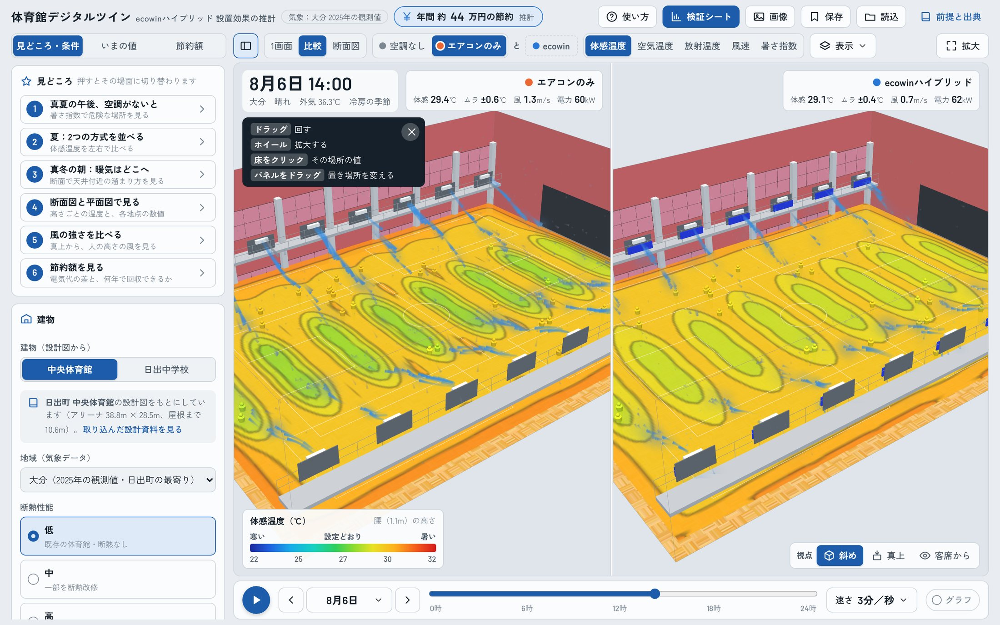
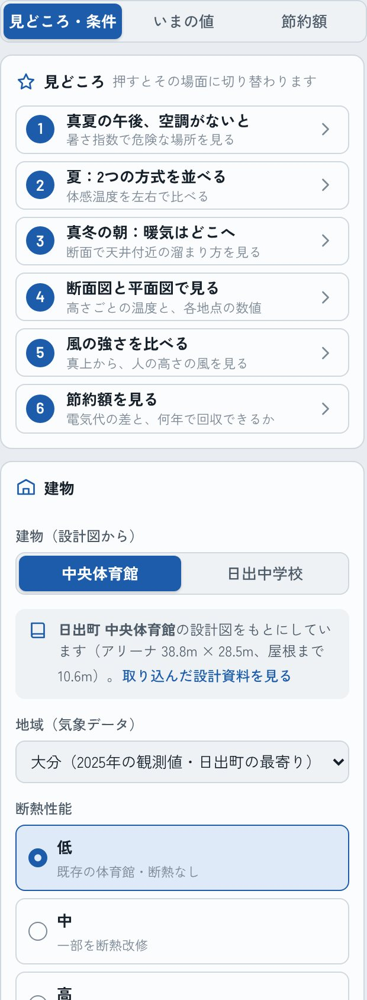
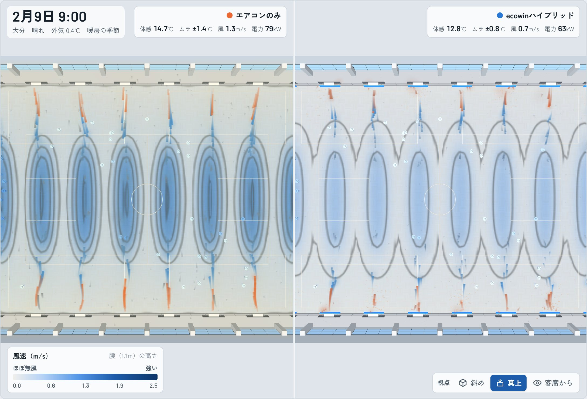
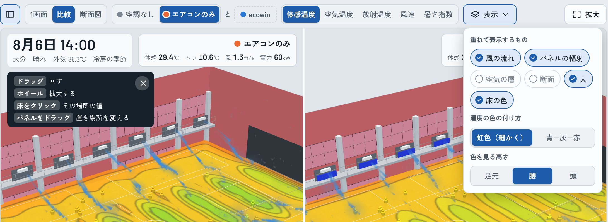
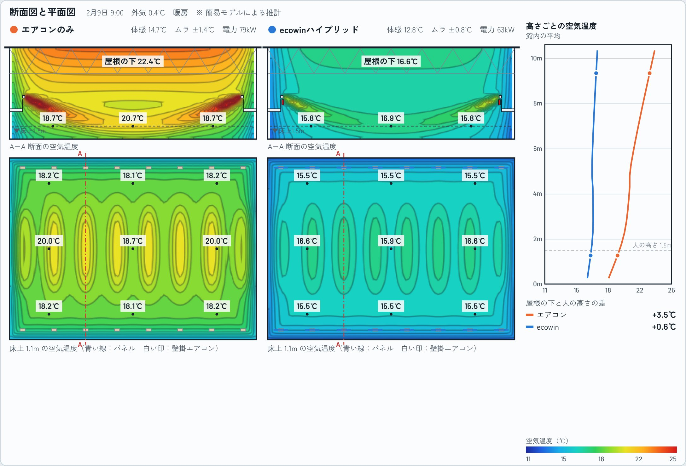
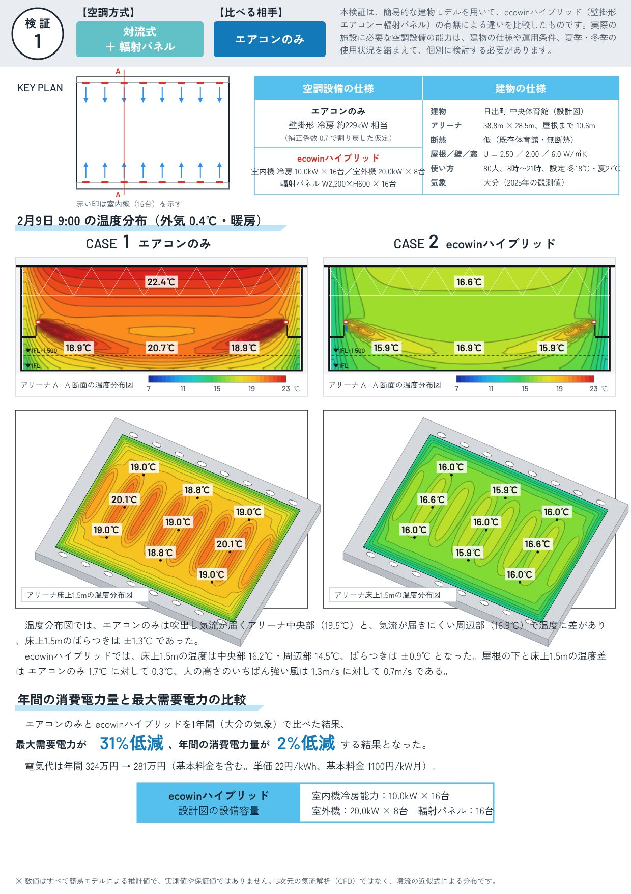
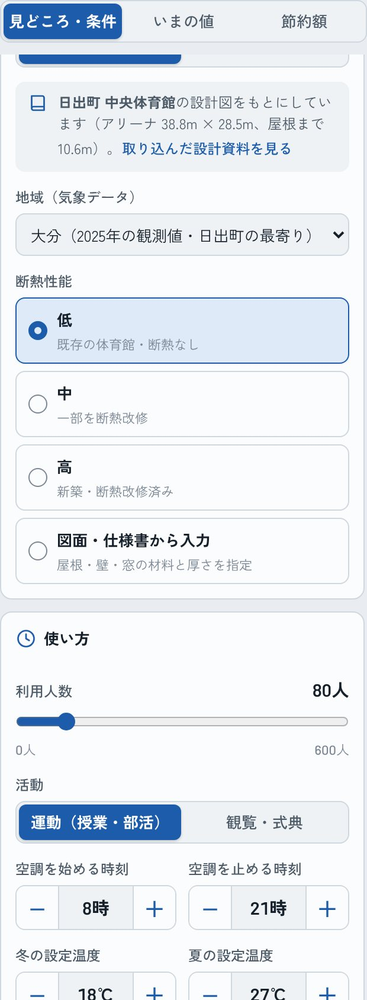
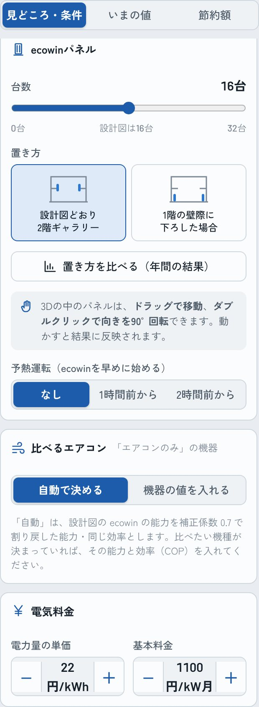
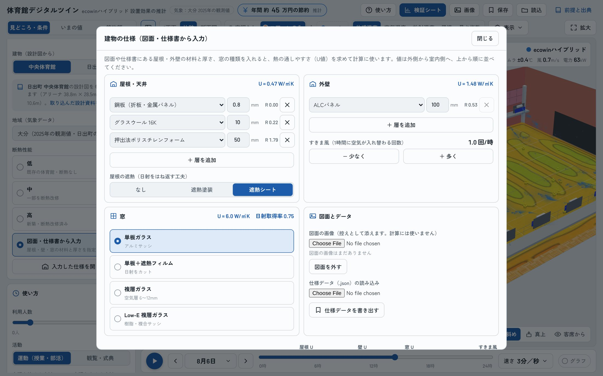
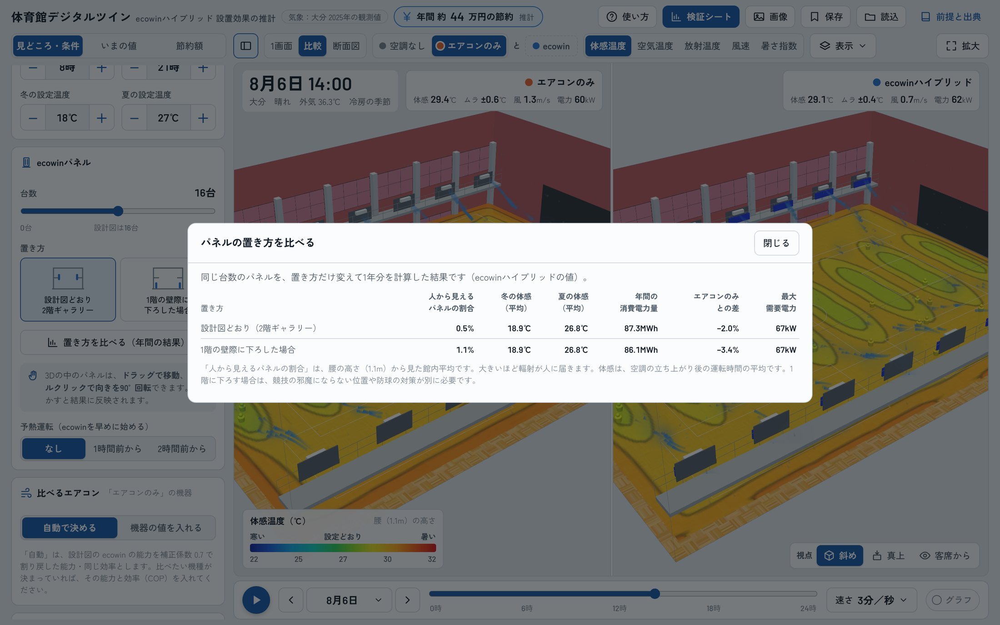

使い方マニュアル
体育館デジタルツイン
ecowinハイブリッド 設置効果の推計

ecowinハイブリッド（壁掛形エアコン＋輻射パネル）を設置した体育館の温度・風・電気代を、3Dと断面図で見せるための画面です。この資料は、初めて触る方が商談で使えるようになるまでの手順をまとめています。
| 形 | 意味 | 使っている場所 |
|---|---|---|
| つながったボタン | どれか1つを選ぶ。選択中は青く塗られます | 画面、方式、色で見るもの、視点、建物、速さ |
| 丸いチップ | 入・切。入のときはチェック印が付きます | 風の流れ、断面、グラフ など |
| − 数値 ＋ | 数値を1段ずつ増減 | 設定温度、空調の時刻、料金、エアコンの能力 |
| 説明や図のついた選択肢 | 内容を読んで1つを選ぶ | 断熱性能、パネルの置き方、窓の種類 |

1234 5678 910113Dの中では、南北の2階ギャラリーに白い箱（壁掛形エアコン）が8台ずつ並び、ecowin の画面ではその下に輻射パネルが付きます。色の付いた流線は空気の流れ、床の色は選んだ値の分布です。

左のパネルのいちばん上にあります。上から順に押すだけで、商談で見せたい場面がそろいます。
| ボタン | 切り替わる内容 | 見せたいこと |
|---|---|---|
| 1 真夏の午後、 空調がないと | 最も暑い日の14時、空調なし、暑さ指数 | 熱中症の危険がある場所と時間 |
| 2 夏：2つの方式を 並べる | 同じ日時、左右比較、体感温度 | 同じ体感で、風が弱い |
| 3 真冬の朝： 暖気はどこへ | 最も寒い日の9時、3Dの断面、空気温度 | 温風が屋根の下に溜まる差 |
| 4 断面図と平面図 で見る | 同じ日時を、2Dの断面図で | 高さごとの温度と各地点の数値 |
| 5 風の強さを 比べる | 真上から、風速 | 人の高さの風の強さの差 |
| 6 節約額を見る | 左パネルが「節約額」に | 電気代の差と回収年数 |



| ボタン | できること |
|---|---|
| 画面：1画面／比較／断面図 | 「比較」で左右に2つの方式が並びます。「断面図」は2Dの図面表示です（6章）。 |
| 方式 | 比較と断面図のときは、比べる相手を「空調なし」「エアコンのみ」から選びます。もう一方は ecowin で固定です。1画面のときは3つから選びます。 |
| 色で見るもの | 床の色を、体感温度・空気温度・放射温度・風速・暑さ指数から選びます。 |
| 表示 | 重ねて表示するもの、温度の色の付け方、色を見る高さを選ぶ小さなパネルが開きます。 |
| 項目 | 意味 | 色 |
|---|---|---|
| 体感温度 | 人が感じる温度。空気の温度と、床・壁・天井・パネルから受ける熱を合わせた値 | 青→水色→緑→黄→赤。 緑が設定温度の付近。 線と線の間は 0.5〜1℃ |
| 空気温度 | 空気そのものの温度 | |
| 放射温度 | まわりの面から受ける熱を温度で表した値 | |
| 風速 | 選んだ高さでの風の強さ | 濃い青ほど強い |
| 暑さ指数 | 熱中症の危険度（WBGT）。28以上は厳重警戒、31以上は危険 | 青→緑→黄→橙→赤 |

| 項目 | 内容 |
|---|---|
| 風の流れ | 空気の流れに乗って漂う流線。暖かい空気は橙、冷たい空気は青 |
| パネルの輻射 | パネルの面からまっすぐ進む光の筋 |
| 空気の層 | 館内の空気温度を立体で重ねたもや。屋根の下の暖気や吹出しの広がりが見えます |
| 断面 | 3Dの中に、館内を縦に切った面の空気温度を立てます |
| 人／床の色 | 人の表示、床の色分布の表示 |
| 温度の色の付け方 | 「虹色（細かく）」は青から赤までの段階表示。「青−灰−赤」は設定温度を灰色にした3色の表示 |
| 色を見る高さ | 足元（0.1m）・腰（1.1m）・頭（1.7m） |
3Dの下の1行で、日付と時刻を動かします。2025年の1年分のどの日時でも見られます。
| 部品 | できること |
|---|---|
| 丸い再生ボタン | 時間が進みます。もう一度押すと止まります（スペースキーでも同じ）。 |
| ＜ 日付 ＞ | 前の日・次の日へ。日付を押すと、日付の指定と「最も暑い日」「最も寒い日」が開きます。 |
| 時刻のつまみ | 0時から24時まで、その日の時刻を動かします。 |
| 速さ | 1秒で進む時間を、3分・5分・10分・30分・1時間・6時間から選びます。 |
| グラフ | 年間マップ（なぞると日時が変わります）と、1日の推移を出します。 |


| やりたいこと | 操作 |
|---|---|
| 回す | 3Dの上でドラッグ |
| 拡大・縮小 | マウスのホイール（スマホやタブレットは2本指） |
| 決まった視点にする | 右下の「視点」：斜め・真上・客席から |
| ある場所の値を見る | 床をクリック。吹き出しに、その場所の体感温度・空気温度・放射温度・風速・暑さ指数が出ます |
| パネルを動かす | ecowin の画面（比較のときは右側）で、パネルをドラッグ |
| パネルの向きを変える | パネルをダブルクリック（90°回転） |

上の「画面」で「断面図」を選ぶか、見どころ 4 を押します。再生や日付の変更にも追従します。


右上の「検証シート」を押すと、いまの日時・条件で縦1枚の画像を作ります。「画像を保存」で保存できます。
| 見出し | 空調方式と、比べる相手 |
| KEY PLAN | 室内機の位置と吹出しの向き、断面の位置 |
| 仕様表 | 空調設備の能力と台数、建物の寸法・断熱・使い方・気象 |
| 温度分布 | CASE1（比べる相手）と CASE2（ecowin）の、A−A 断面と床上1.5mの空気温度 |
| 説明文 | 中央部と周辺部の温度、ばらつき、屋根の下との温度差、風の強さ。数字はその時刻の計算結果から自動で入ります |
| 年間の比較 | 最大需要電力と消費電力量の低減率、電気代 |
左のパネルの「見どころ・条件」を下へ送ると、建物・使い方・パネル・比べるエアコン・電気料金を変えられます。変えると、3Dと年間の結果がすぐに計算し直されます。



| 項目 | 内容 |
|---|---|
| 建物 | 中央体育館／日出中学校。切り替えると画面を読み直して、3Dを作り直します |
| 地域 | 気象データ。「大分」は日出町に最も近い気象台の2025年の観測値です |
| 断熱性能 | 低・中・高の目安か、「図面・仕様書から入力」（8章） |
| 利用人数・活動 | 人の発熱と換気量に反映されます |
| 空調の時刻・設定温度 | 運転を始める時刻と止める時刻、冬と夏の設定温度 |
| パネルの台数・置き方 | 設計図は16台・2階ギャラリー。1階の壁際に下ろした場合も選べます（9章） |
| 予熱運転 | ecowin だけ、運転開始を1〜2時間早めます |
| 比べるエアコン | 「エアコンのみ」の能力と効率（COP）。「自動」は設計図の能力を 0.7 で割り戻した値です。比べたい機種が決まっていれば、その値を入れてください |
| 電気料金 | 電力量の単価と基本料金 |
断熱性能で「図面・仕様書から入力」を選ぶと開きます。図面や仕様書にある材料と厚さを入れると、熱の通しやすさ（U値）を求めて計算に使います。

「建物」の欄の「取り込んだ設計資料を見る」を押すと、設計書と設計図から読み取った3施設の機器（エアコンの能力と台数、輻射パネルの寸法と台数、冷媒管の長さなど）の一覧が開きます。
「ecowinパネル」の欄の「置き方を比べる（年間の結果）」を押すと、同じ台数のパネルを置き方だけ変えて1年分を計算し、表にします。

| 列 | 意味 |
|---|---|
| 人から見えるパネルの割合 | 腰の高さから見て、まわりの面のうちパネルが占める割合（館内平均）。大きいほど輻射が人に届きます |
| 冬・夏の体感 | 空調が立ち上がったあとの運転時間の平均 |
| 年間の消費電力量、エアコンのみとの差 | ecowin の値と、エアコンのみに対する増減 |
| 最大需要電力 | 基本料金のもとになる値 |

左のパネルの「いまの値」に、選んでいる日時の値が出ます。上の「ecowinの強み」は、エアコンのみと並べた棒グラフです。ecowin のほうが小さい項目に、青い印と何%小さいかが付きます。差が無いときは「ほぼ同じ」と出ます。
| 風の強さ | 弱いほど、羽根やボールが流されにくい |
| 場所による温度のムラ | 小さいほど、どこにいても同じ体感 |
| 屋根の下にたまる熱 | 腰の高さとの空気温度の差 |
| 消費電力 | その瞬間に使っている電力 |
| 体感温度 | 同じ体感になるように運転しています |

画面上部の「年間 約○○万円の節約」か、左のパネルの「節約額」を押すと開きます。
| 選び方 | 意味 |
|---|---|
| この計算の値 | この画面の条件で計算した削減率 |
| メーカー最大 | メーカー公表の最大値 34%（高性能エアコン単体との比較） |
| 自分で決める | つまみで 1〜34% の範囲から選ぶ |
| 電力量料金の節約 | 減った電力量 × 単価 |
| 基本料金の節約 | 最大需要電力が下がる分 |
| 1年間の節約額 | 上の合計（＋保守費の差） |
| 回収するまで | 導入費用の差額 ÷ 1年間の節約額 |
| 10年・20年の差し引き | 節約額の合計 − 導入費用の差額 |
| CO2の削減 | 年間の削減量と、杉の木に換算した本数 |

計算の前提と出典は、画面右上の「前提と出典」と、docs/calc_logic_gym.md にまとめています。
| こんなとき | 対処 |
|---|---|
| 動きが重い・カクつく | 「表示」で「空気の層」を切ってください。それでも重いときは「風の流れ」も切り、「1画面」にします。 |
| 3Dが出ない | ブラウザを Chrome か Edge の新しい版にしてください。断面図と検証シート、数値は使えます。 |
| 条件を変えすぎた | ページを再読み込みすると、初期の状態に戻ります。 |
| パネルをつかめない | パネルは ecowin の画面（比較のときは右側）でだけ動かせます。 |
| 建物を切り替えたら条件が戻った | 切り替えるとページを読み直すためです。条件は建物ごとに入れ直すか、「保存」しておきます。 |
| 画像やファイルが保存できない | 画像は右クリック（スマホは長押し）で保存できます。仕様データは、表示された文字をコピーして保存できます。 |
キーボード：スペース 再生・停止 ← → 1時間 Shift＋← → 1日 Esc 小さなパネルを閉じる